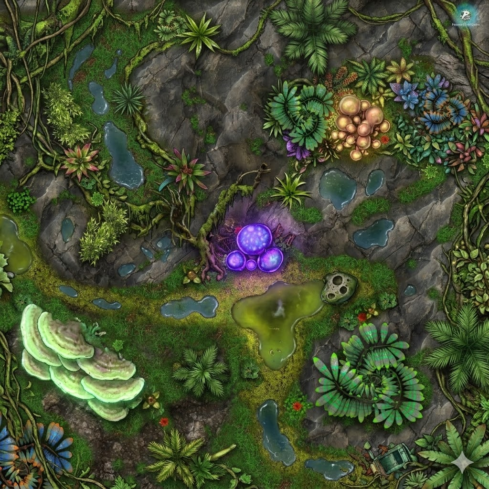

Deep in the jungle of Ajan Kloss, a clearing opens in the dense canopy — a natural amphitheater of volcanic rock, alien vegetation, and environmental hazards. The air is thick with humidity, spore haze, and the constant drone of insects. Bioluminescent organisms provide the only light beneath the canopy. Nothing about this place is welcoming. Everything about it is alive.
The canopy thins over the clearing but never fully opens — diffused green-gold light filters through, enough to see by, not enough to feel exposed. Vine curtains hang from the edges, swaying in air currents that don't reach the ground. The trees surrounding the clearing are massive — trunks wider than a speeder, bark covered in climbing moss and parasitic ferns.
Volcanic basalt, the same dark stone as the Vanishing Place fortress, broken through a thick layer of moss and humus. Where the rock is exposed, it's slick with moisture. Where it's covered, the moss is soft and spongy, absorbing footsteps. The ground is uneven — natural steps, ridges, and depressions filled with standing water of varying safety. The basalt is warm in patches where geothermal seeps run close to the surface — a sign that the volcanic substrate is active beneath the jungle floor. Those warm spots are often where the acid pools form.
Constant insect drone — layered buzzes, clicks, and a deep thrumming that seems to pulse in time with the bioluminescent bloom. Bird-analogue shrieks from the canopy, irregular and startling. Water dripping everywhere. The jungle never stops talking. When it goes quiet, something is wrong.
Wet earth, decomposing vegetation, chlorophyll so dense it coats the back of your throat. Near the bloom: sharp chemical ozone. Near the acid pool: metallic, acrid. Near the shelf fungi: rich earth and mycelium. The smells layer and shift as you move — three steps in any direction changes what you're breathing.
Ajan Kloss sits on a geologically active volcanic substrate — the same basalt that the Vanishing Place was built from. Beneath the jungle floor, a network of geothermal vents pushes mineral-rich, superheated water toward the surface through hairline fractures in the rock. Extremophile microorganisms colonize these seeps, metabolizing the volcanic sulfur compounds and excreting concentrated sulfuric acid as a byproduct. The acid collects in natural rock depressions, mixing with rainwater. Fresh pools are nearly indistinguishable from clean water. Older, more concentrated ones develop the telltale yellow-green opacity and oily surface sheen. The dead border — where moss and plant life dies back from the pool's edge — is the ecosystem's warning sign. The jungle adapted around these pools over millennia; everything native knows to avoid them. Offworlders don't.
The murky yellow-green color and oily surface sheen are the visual tells, but dilute pools can look almost clear. The dead border is the most reliable sign — a ring of bleached, brittle moss or pitted rock where nothing living touches the waterline. The acrid, metallic smell is detectable within a meter. A tox detector identifies them instantly. A thrown object produces a visible hiss and dissolves organic material on contact. The pools are scattered throughout the jungle, not just in clearings — every rock depression, every trail dip, every place water collects is suspect. The geothermal seeps that feed them are warm to the touch underfoot, even through boot soles.
The large purple-glowing spheres are pressurized spore vessels. Physical impact, blaster fire, or significant vibration triggers a violent detonation — a burst of toxic spores in a 5-meter radius. The spores cause choking, disorientation, and respiratory damage without a breath mask. The bloom in the clearing center is the largest visible specimen, but smaller blooms grow in clusters throughout the jungle. They pulse brighter when disturbed — a warning, if you know to read it.
The ridge overlook in the north provides elevated positioning with full visibility of the clearing. The rocky shelf on the east side offers partial elevation. The shelf fungi area on the southwest is low ground — poor visibility, good concealment.
The vine canopy provides overhead cover and vertical movement options for anyone who can climb. The spiral ferns in the southeast block line-of-sight at ground level. The moss bank absorbs sound. The dense undergrowth on the jungle edges is impenetrable without cutting.
The bioluminescent bloom dominates the center — anything that triggers it creates a toxic cloud. The acid pool blocks direct movement across the southern clearing. Smaller blue pools scattered across the rocky areas are safe (rainwater) but indistinguishable from acid pools without testing.
Imperial supply crate, weathered and empty. Tells the PCs someone else has been here — and that the Empire's reach extends even to this uncharted moon. The serial number, if traced, dates to a Clone Wars-era supply drop. Mandrake may comment on it if asked.